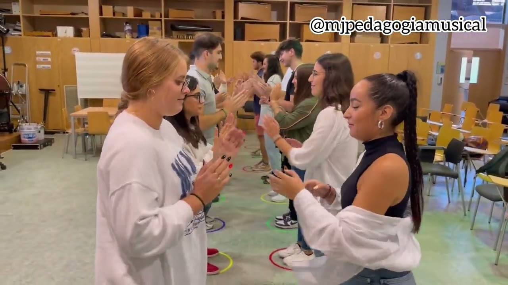
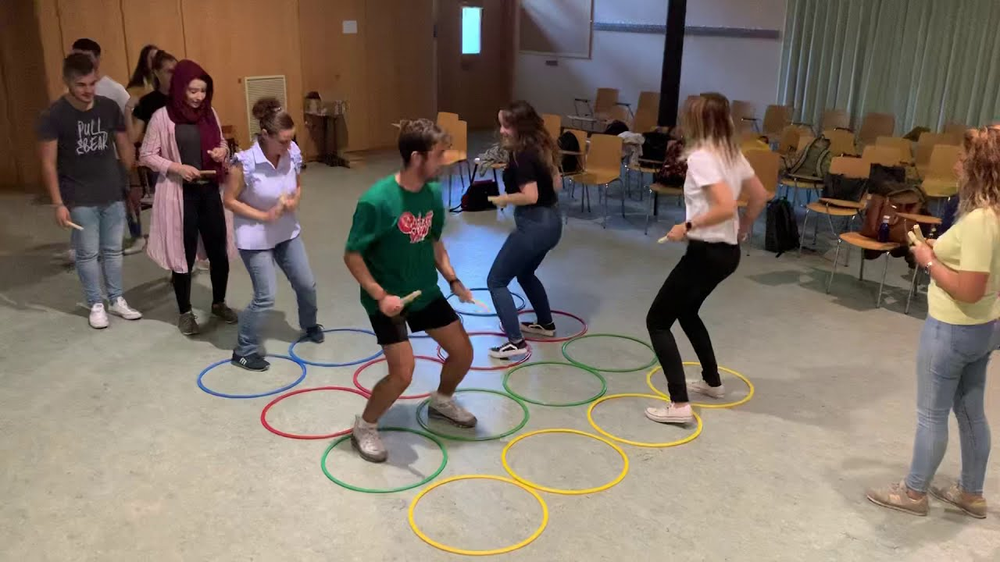
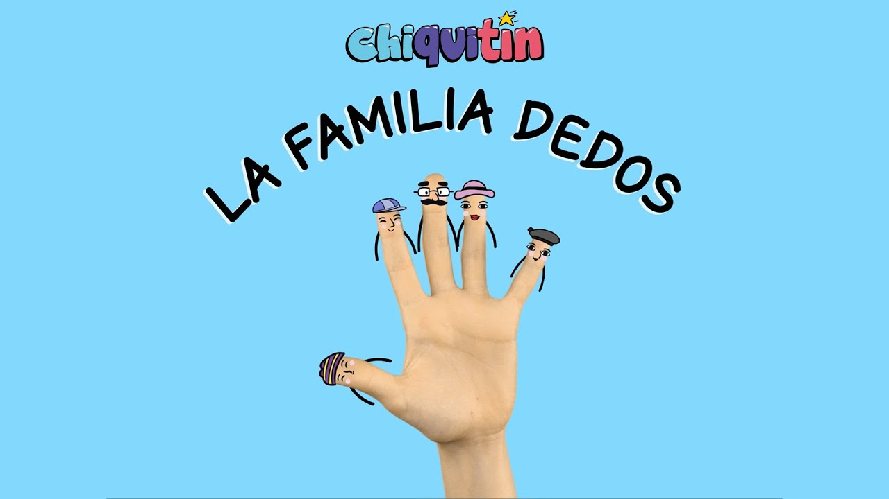
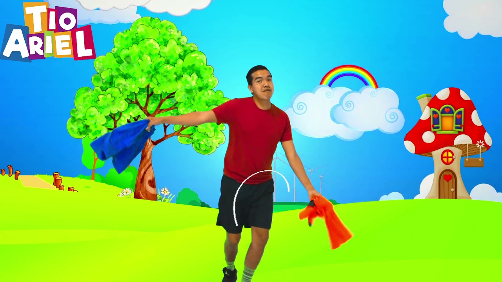
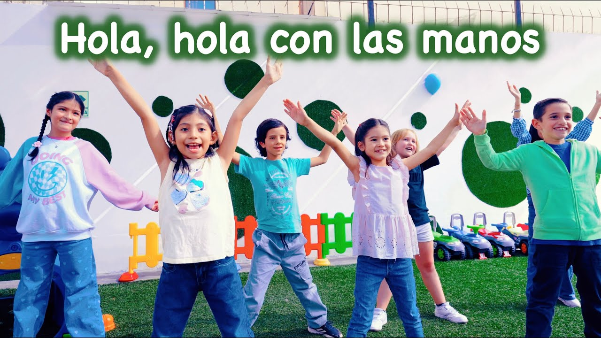

Área Afectiva
La educación afectiva como base del desarrollo emocional
La educación afectiva y el desarrollo de la inteligencia emocional son elementos fundamentales en la formación integral de los estudiantes (Valarezo, 2022, citado en Bastidas Amador et al., 2023). El docente utiliza herramientas lúdicas para que el estudiante logre reconocer e integrar sus emociones, identificándolas por su nombre y comprendiendo que son sentimientos que necesitan canalizarse para desarrollar su máximo potencial.
En coherencia con este enfoque, Don Bosco comprendía que la educación debía tocar el corazón de los educandos, fomentando una relación basada en la confianza, el afecto y la razón. Así, el educador actúa con justicia y cercanía, ganándose el respeto y cariño de sus alumnos incluso al corregirlos (Oficina de Pastoral Familiar Salesiana, 2016, p. 4). De esta manera, la atención a la dimensión afectiva se convierte en un pilar esencial para una educación integral y profundamente humanizadora
Música divertida
Desarrollo Afectivo
Grado: 6.º de primaria
Objetivo: Fomentar la expresión de emociones y la autoestima a través de la música.
Motivación: Preparar un espacio amplio y seguro para los niños. Presentar canciones alegres y motivadoras. Animar a los estudiantes a compartir cómo se sienten durante la actividad. Finalizar con una breve reflexión sobre la importancia de expresar emociones grupales.
Coordinación Musical – “Anaconda”
Desarrollo Afectivo
Grado: 4.º a 6.º de primaria
Objetivo: Fortalecer los lazos afectivos entre estudiantes a través de la música y la coordinación grupal.
Motivación: Se le explica al grupo que la música y el movimiento son herramientas poderosas para conectar emocionalmente con los demás. Los participantes experimentarán cómo la sincronización y la colaboración pueden generar un ambiente positivo y afectivamente enriquecedor.
“La Familia Dedos” – Chiquitín
Desarrollo Afectivo
Grado: 1.º a 3.º de primaria
Objetivo: Estimular la expresión afectiva a través de juegos de manos y canciones.
Motivación: Los estudiantes disfrutarán de un juego que combina ritmo, coordinación y expresión afectiva, promoviendo la acogida mutua.
Moviendo los pañuelos
Desarrollo Afectivo
Grado: 1.º a 3.º de primaria
Objetivo: Estimular el reconocimiento y uso de los colores a través del movimiento.
Motivación: Utilizar un video musical como recurso para animar a los estudiantes a conocer los colores y agilizar el movimiento del cuerpo en momentos de clase.
Saludo de ambientación
Desarrollo Afectivo
Grado: 1.º a 3.º de primaria
Objetivo: Fomentar la confianza y el respeto entre los estudiantes.
Motivación: La maestra utilizará como apoyo el audiovisual y todos los estudiantes se seguirán cantando y moviéndose con actitud dinámica dando a conocer los colores y agilizar el movimiento del cuerpo en momentos de clase.
